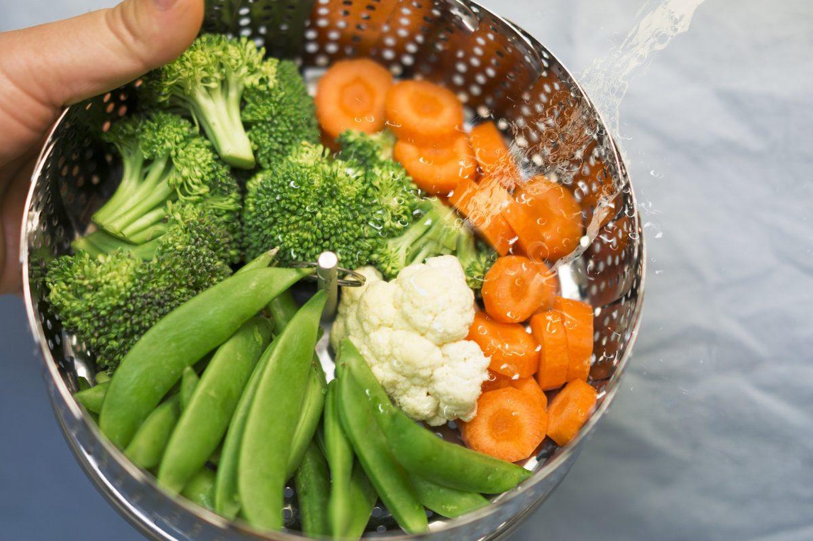

Welcome to daržovės
Džiovintos daržovės - Saldukas
2020.10.29 08:44Skip to content Apie mus Kontaktai Prisijungti Krepšelis / € 0.00
Krepšelyje nėra produktų.
Krepšelis
Krepšelyje nėra produktų.
Pradžia Naujienos Prieskonių mišiniai Prieskoniai be druskos Prieskoniai su druska Prieskoniai žvėrienai Marinatai rub’ai Prieskoniai Prieskoninės žolelės ir kt Prieskoninės sėklos Džiovintos daržovės Pipirai Konditerijos prieskoniai ir priedai Profesionaliai virtuvei Kiti produktai Riešutų kremas Kruopos Riešutai ir vaisiai Džiovinti vaisiai Riešutai Kava Arbata Dovanėlės ir rinkiniai Sportas Akcijos Apie mus KontaktaiDžiovintos daržovės
Prekyba džiovintomis daržovėmis didmeniniais kiekiais po 500g 1kg ir 25kg
Greitas pristatymas
Po užsakymo gavimo ir jo apmokėjimo, galimas pristatymas 1-2 darbo dienomis naudojant Venipak pristatymo tarnyba.
Kiekio nuolaidos
Kuo daugiau perki, tuo didesne procentinę nuolaidą gauni nuo kainos.
50-100€ nuolaida 2%
100-200€ nuolaida 5%.
200 € ir daugiau nuolaida 10%
Nemokamas pristatymas
Perkant už daugiau nei 35€ , nemokamas pristatymas Lietuvoje
Džiovintos daržovės
€ 35.00 liko iki nemokama pristatymo Naujiena Įsiminti prekę + Greita peržiūra
Pomidorai džiovinti gabaliukais
€ 3.75 – € 7.36 -% Naujiena Įsiminti prekę + Greita peržiūraSalierai gabaliukais
€ 4.18 – € 6.95 -% Super Akcija Įsiminti prekę + Greita peržiūraRūkyta saldžioji paprika malta
€ 1.90 – € 6.95 Įsiminti prekę + Greita peržiūraKrienų šaknys gabaliukais
€ 5.30 – € 9.39 -% Įsiminti prekę + Greita peržiūraSvogūnų pusžiedžiai
€ 2.18 – € 4.15 Įsiminti prekę + Greita peržiūraSvogūnų granulės
€ 2.95 – € 26.50 Įsiminti prekę + Greita peržiūraSvogūnai malti
€ 2.59 – € 17.08 Įsiminti prekę + Greita peržiūraMorkų granulės
€ 2.72 – € 19.06 Įsiminti prekę + Greita peržiūraMorkos stambios
€ 2.91 – € 20.62 Naujiena Įsiminti prekę + Greita peržiūraSalierų granulės
€ 4.95 – € 40.84 Įsiminti prekę + Greita peržiūraSaldžioji paprika malta
€ 1.85 – € 19.50 Įsiminti prekę + Greita peržiūraCiberžolės maltos
€ 0.82 – € 16.39 -% Įsiminti prekę + Greita peržiūraČesnako granulės stambios
€ 1.09 – € 6.58 -% Įsiminti prekę + Greita peržiūraČesnako granulės smulkios
€ 1.04 – € 6.00 Įsiminti prekę + Greita peržiūraČesnakas maltas
€ 0.68 – € 18.76 Įsiminti prekę + Greita peržiūraStambus daržovių mišinys sriubai
€ 0.69 – € 20.88 Įsiminti prekę + Greita peržiūraKajenas maltas
€ 0.68 – € 3.80 -% Įsiminti prekę + Greita peržiūraPastarnokas
€ 1.50 – € 7.45 -% Įsiminti prekę + Greita peržiūraČesnako skiltelės
€ 0.61 – € 3.41 Įsiminti prekę + Greita peržiūraImbieras
€ 0.75 – € 22.77Daugiau kategorijų
Riešutų kremas
5 Produktai
Proteinas
5 Produktai
Sportas
10 Produktai
Profesionaliai virtuvei
7 Produktai
Kruopos
9 Produktai
Arbata
8 Produktai
Kava
7 Produktai
Pipirai
14 Produktai
Marinatai rub'ai
19 Produktai
Prieskoniai be druskos
20 Produktai
Prieskoniai su druska
23 Produktai
Prieskoniai žvėrienai
9 Produktai
Prieskoninės sėklos
19 Produktai
Džiovintos daržovės
20 Produktai
Prieskoninės žolelės ir kt
19 Produktai
Konditerijos prieskoniai ir priedai
33 Produktai
Riešutai ir vaisiai
29 Produktai
Dovanėlės - rinkiniai
8 Produktai
Kalėdinės dovanos
8 Produktai
Apie mus UAB Saldukas, amžina tradicija, visada pasiūlys įvairiausių prieskonių, prieskonių mišinių, prieskoninių žolelių, konditerijos žaliavų, džiovintų riešutų-vaisių ir daug kitų produktų iš Lietuvos ir viso pasaulio.
Tai pat teikiame pakavimo paslaugas, mažo ir didelio tiražo pakuotės sprendimus šventėms, parduotuvėms ir ne tik.
Bal Receptai: Žvėrienos kepenys (trumpi receptai) 02
Kov Receptas: Medaus tortas 26
Vas Receptas: Gaivios salotos su vištiena 21
Vas Receptas: nugarinės palendricos vytinimas 25
Rgs Mūsų prieskoniai Garam masala, kas tai ? 20
Bir Lęšiai: ne tik sotu, bet ir sveika Žymės allspice aštrus bazilikas ciberžolė citrina dažai garstyčios Grynuoliai grynuolis herb herbs hot kalendra Kepiniai krapai kvapnieji kvapnusis lauro lapai mairunas maltas marinatai Medziotojams Mišiniai mustard paprika parsley pepper petražolės pipiras prieskoniai Prieskonis raudonėlis Rinkiniai rozarinas saldi saldu seklos spice Spice mix spices sweet zolelės česnakas čiobreliai želatina Apie mus Kontaktai Copyright 2020 © All rights reserved Pradžia Naujienos Prieskonių mišiniai Prieskoniai be druskos Prieskoniai su druska Prieskoniai žvėrienai Marinatai rub’ai Prieskoniai Prieskoninės žolelės ir kt Prieskoninės sėklos Džiovintos daržovės Pipirai Konditerijos prieskoniai ir priedai Profesionaliai virtuvei Kiti produktai Riešutų kremas Kruopos Riešutai ir vaisiai Džiovinti vaisiai Riešutai Kava Arbata Dovanėlės ir rinkiniai Sportas Akcijos Apie mus Kontaktai Prisijungti × produktai įdėti į krepšelį × Login with Facebook Login with Google
Prisijungti
Registruotis
Šioje svetainėje naudojami slapukai, palaikančius jos veikimą Jūsų naršyklėje, kad naršyti būtų patogu ir galėtumėte naudotis visomis el. parduotuvės funkcijomis. SUTINKU Privatumo politika